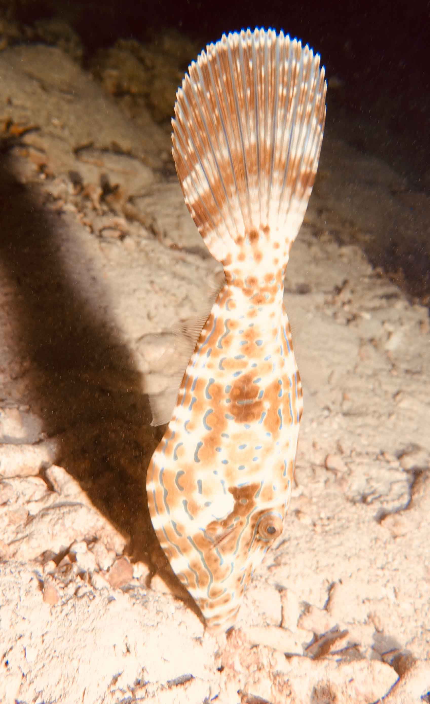

MirkoFriebe

2019 | Thailand
Ko Phi Phi
Ko Phi Phi is a group of 6 small Islands located in the Andaman Sea and is approx 40 km’s from the main tourist hubs of Phuket and Krabi on the Thai mainland. There are no vehicles on this small paradise island, which makes it unique from the hustle and bustle of the mainland. Everything is laid back and relaxed within easy walking distance. Due to the Nightlife, you have to be noise resistent though, in certain areas. Thailand’s warm crystal clear waters offers exciting scuba diving opportunities for all levels of scuba divers, whether it is your fist time or your 500th Dive. Phi Phi Islands beautiful reefs have coral and marine life, that will leave you breathless and begging for more. A true Scuba Divers Paradise!
Cras dapibus. Vivamus elementum semper nisi. Aenean vulputate eleifend tellus. Aenean leo ligula, porttitor eu, consequat vitae, eleifend ac, enim. Aliquam lorem ante, dapibus in, viverra quis, feugiat a, tellus.

Cras dapibus. Vivamus elementum semper nisi. Aenean vulputate eleifend tellus. Aenean leo ligula, porttitor eu, consequat vitae, eleifend ac, enim. Aliquam lorem ante, dapibus in, viverra quis, feugiat a, tellus.
“Natural science will in time incorporate into itself the science of man, just as the science of man will incorporate into itself natural science: there will be one science.”
Karl Marx